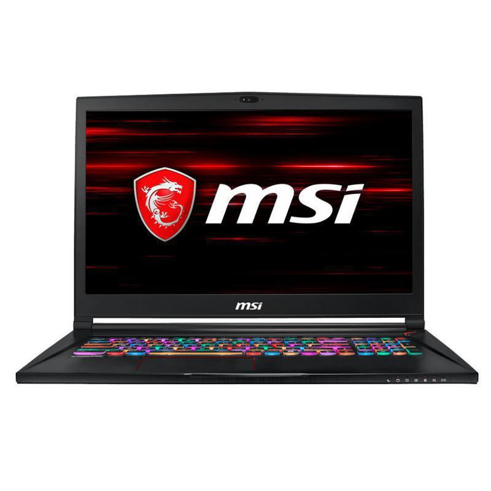

MSI GS73 Stealth 8RF-007XES 17" Core i7 2,2 GHz - SSD 256 GB + HDD 1 TB - 16GB - Nvidia GeForce GTX 1070 Teclado Español
Dimensión de la pantalla (pulgadas) : 17,3
Almacenamiento : 1256 GB
Memoria RAM : 16 GB
Modelo : GS73 Stealth 8RF-007XES
Velocidad del procesador : 2,2 GHz
Marca del procesador : Intel
Tipo de procesador : Core i7
Tarjeta gráfica : Nvidia GeForce GTX 1070
Sistema operativo : Sin OS
Tipo de teclado : QWERTY
Color : Negro
Capacidad de almacenamiento SSD (GB) : 256
Tipo de almacenamiento : HDD + SSD
Tipo de memoria : DDR4
Número de núcleos : 6
Memoria de la tarjeta gráfica (GB) : 8
Tipo memoria de la tarjeta gráfica : Dédié
Pantalla táctil : No
Bluetooth : Sí
Webcam : No
Micrófono : No
Idioma del teclado : Español
Teclado retroiluminado : Sí
Teclado numérico : Sí
Fecha de lanzamiento : 2018
Procesador : Core i7-8750H
Tipo de teclado e idioma : QWERTY - Español
Series : GS Stealth
Color principal : Negro
Marca : Msi
Peso : 2430 g